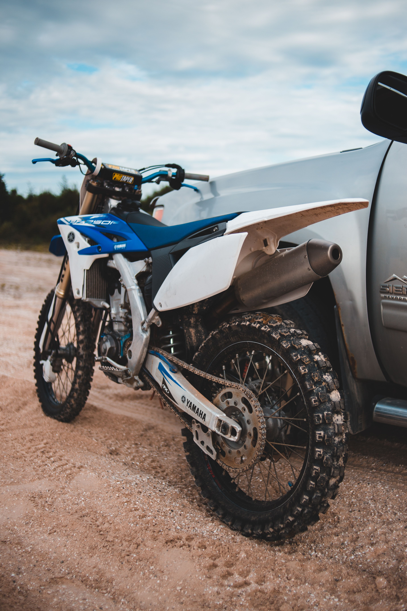
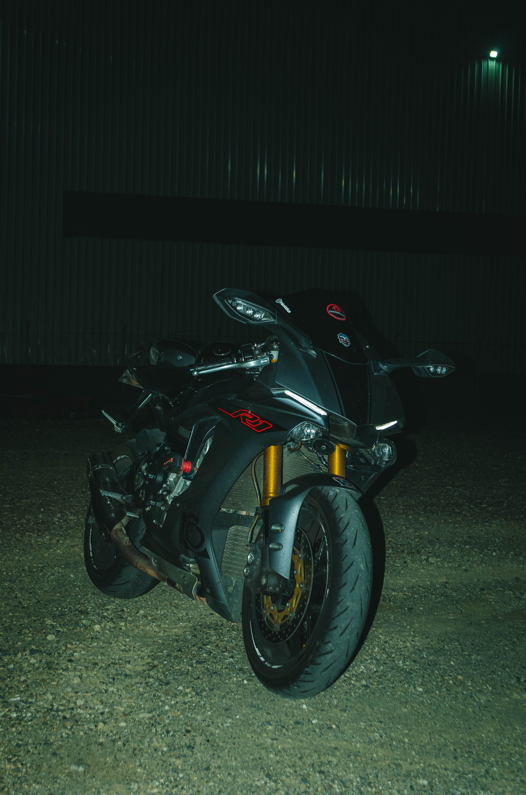

Juan Luis
¡Bienvenidos a mi bitácora! Aquí compartiré mi pasión por el motocross y las motos deportivas, dos mundos llenos de velocidad y emoción. #Motocross #MotosDeportivas
Un espacio dedicado al mundo de las motos, las carreras, la velocidad y la adrenalina.
¡Bienvenidos a mi bitácora! Aquí compartiré mi pasión por el motocross y las motos deportivas, dos mundos llenos de velocidad y emoción. #Motocross #MotosDeportivas

FotoLas motos de motocross están preparadas para superar saltos, curvas y terrenos difíciles. #Motocross #Yamaha
«El éxito es la suma de pequeños esfuerzos repetidos día tras día».
En el motocross, entrenar y mejorar cada día es fundamental. #Motivación #Motocross
Si te gustan las motos deportivas, visita la web oficial de Yamaha para descubrir sus modelos y características. Visitar la web oficial de Yamaha #Yamaha #Motos
— ¿Qué prefieres, motocross o motos deportivas?
— ¡Las dos! El motocross por sus saltos y las deportivas por su diseño y velocidad.
#Motocross
#Deportivas
Los saltos y las curvas hacen del motocross un deporte espectacular. ¡Mira este vídeo!
Una buena canción para acompañar la pasión por las motos y la velocidad. 🎸

FotoLas motos deportivas destacan por su diseño aerodinámico y sus prestaciones. #MotosDeportivas #Motor
🧵 Hilo 1/3: ¿Qué diferencia hay entre una moto de motocross y una deportiva? Las de motocross están diseñadas para circuitos de tierra y saltos. #Motocross #Motos
Hilo 2/3: Las motos deportivas están pensadas para carretera y circuito asfaltado. Destacan por su posición de conducción y su diseño aerodinámico. #Deportivas #Motor
Hilo 3/3: Aunque son diferentes, ambas necesitan práctica, responsabilidad y protección. ¡Lo importante es disfrutar del mundo del motor con seguridad! #Seguridad #Motos